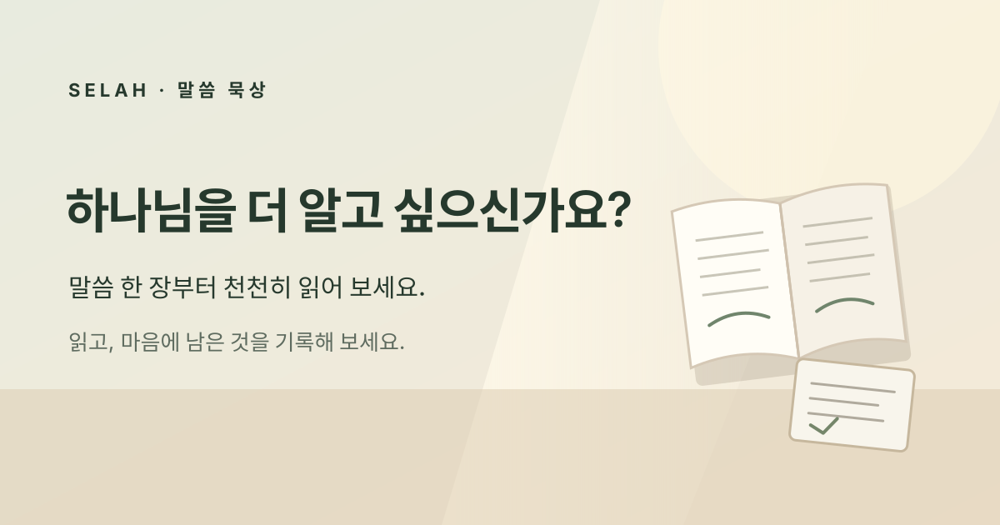

Selah
홈이 기기에 저장
설정
설정은 이 기기에 저장돼요.
켜면 앱 오류와 BlueCloud API 실패를 자동 공유합니다. 오류 종류, 경로 구분, 상태 코드, 시각만 전송하며 묵상·기도·계정·인증 토큰은 포함하지 않습니다. 오류 보고는 Selah 관리자에게 전달되며, 서비스가 접속 IP를 처리할 수 있습니다.
말씀 안에 머무는 고요한 자리
말씀을 천천히 마음에 담아 보세요.
읽고, 머물고, 깨달은 것을 기록하세요.

여러 기기에서 묵상을 이어가세요
무료 계정을 만들면 기록과 퀴즈를 내 기기 사이에 동기화할 수 있어요.
조용히 말씀에 머물기
말씀에 집중하거나, 시간을 정해 묵상해요.
휴대폰과 PC에서 같은 BlueCloud 계정으로 로그인하면 읽던 위치와 타이머를 이어갈 수 있어요.
성경 번역본
언어별 기본 번역본은 앱에 포함되어 오프라인에서도 읽을 수 있어요. 다른 번역본은 원할 때 이 기기에 마태복음만 내려받습니다.
Biblia completa en español · Reina-Valera 1909 · Bíblia completa em português · Bíblia Livre 2018
목록에 없으면 이름을 검색해 보세요. 처음에는 최대 12개를 보여줍니다.
성경 듣기 설정
짧은 편지 · 글 모음말씀 읽기를 마친 뒤, 필요할 때 열어보세요
김근후가 쓴 신앙과 삶에 관한 글을 짧게 소개합니다. 소개는 화면 언어로 제공되고, 전체 글은 한국어 원문으로 열립니다.
브런치에서 최신 글 더 보기 ↗새로 쓴 글은 작성자 페이지에서 계속 확인할 수 있어요.
친구 · 큐티 자료 필요할 때 열기
BlueCloud 친구
내 사용자 이름
친구를 보려면 BlueCloud에 로그인하세요.
함께 읽은 기록
이 기록과 별명은 내 계정에만 저장됩니다.
공동체 말씀 플랜
BlueCloud 공동체를 만들거나 초대 링크로 참여해 같은 말씀 계획을 따라가고, 선택한 묵상만 공동체 안에서 나눠요.
BlueCloud에 로그인한 뒤 사용할 수 있어요.
오늘의 큐티 정하기
링크는 내 라이브러리에 저장되고 BlueCloud 연결 시 동기화됩니다. YouTube 영상은 ‘앱에서 재생’을 눌러야 플레이어가 열립니다.
지난 묵상
오늘 묵상은 어땠나요? 장소와 컨디션 돌아보기
후기는 이 기기와 로그인한 BlueCloud 계정에 비공개로 저장됩니다. GPS 위치는 자동 수집하지 않습니다.